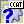
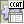
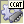

CopyCat is designed to provide Delphi, C++Builder and FreePascal developers an all-in-one solution for database replication needs. It is comprised of the following components:
|
Core replication component – TCcReplicator handles full two-way replication between two databases. | |
|
Configuration component – Use TCcConfig to create in each database the meta-data necessary for replication. | |
|
 TCcQuery |
Use TCcQuery to execute queries using CopyCat's connection system. A TCcQuery can be hooked up to any type of TCcConnection, and can therefore execute queries through any direct connector (FIBPlus, IBX, ADO, etc...) or through any transport (RTC, XMLRPC, ...). |
|
 TCcDataSet |
TCcDataSet provides an abstract TDataSet descendent, which can be linked up to data-aware controls for display and/or editing data. Like TCcQuery, TCcDataSet can be used with any TCcConnection. The TCcDataSet is not available on the mobile platforms nor on FreePascal. |
|
 TCcMemoryData |
TCcMemoryData is the memory dataset that is used internally in CopyCat, as a basis for TCcDataSet. It is registered on the palette merely for convenience. Internally, it is based on a TRxMemoryData. It is not available on the mobile platforms nor on FreePascal. |
CopyCat also registers a palette called "CopyCat connectors", which contains links to third-party connection components which CopyCat can use to establish a database connection for replication.
The first thing you need to do after installing CopyCat is to choose which connectors you would like to use, and compile and install them into your IDE. Each connector supported by CopyCat provides a bridge with a third-party database connectivity library (IBX, IBObjects, FireDAC, UniDAC, ADO, etc.). There are also transport connectors (RTC and XMLRPC), that enable CopyCat to replicate over a middleware, which allows for improved security and performance.
Jonathan Neve - Microtec Communications. Feel free to contact us if you have any feedback or questions.
Copyright (c) 2015. All rights reserved. http://www.copycat.fr
3.8
|
Copyright (c) 2015. All rights reserved. http://www.copycat.fr
|
|
What do you think about this topic? Send feedback!
|


 Author
Author